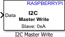

Write data to I2C slave device or I2C slave device register
Simulink Support Package for Raspberry Pi Hardware

Write data to an I2C slave device or an I2C slave device register. Using this block, you can also write data to a specific register on the I2C slave.
For more information on I2C communication, refer to Support I2C Communication and The Raspberry Pi I2C Interface (MATLAB Support Package for Raspberry Pi Hardware). To open the pin map of the Raspberry Pi board, click the View pin map.